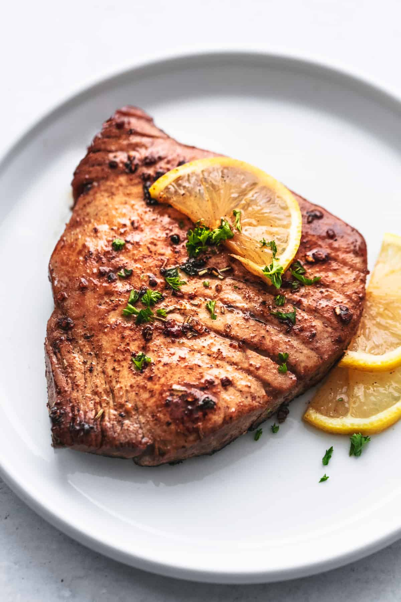

Tuna Steak

Description
This is the best, easy tuna steak marinade! All you need is a few simple ingredients and 30 minutes to infuse your tuna steaks with deliciously bold flavor – zesty, with fresh herbs, garlic, a hint of sweet honey, and savory spices.
Tuna steak is one of my favorite fish to make. It’s so meaty and easy to cook and tastes delicious. This marinade for tuna steaks couldn’t be any easier – it’s full of simple ingredients you probably already have (think oil, honey, garlic, cumin, parsley). And all you have to do is put the altogether and let the tuna steaks marinade for 30 minutes and grill!
Ingredients
- Olive oil
- Honey
- Minced garlic
- Cilantro
- Parsley
- Salt and pepper
Steps
- First step is the easiest: Combine all of the marinade ingredients (yep, all of them!) and whisk vigorously.
- Next, place the tuna steaks in a gallon Ziploc bag, then, pour in the marinade toss to coat the tuna steaks, and press out the excess air and seal. (Alternately, you can put the tuna steaks in a bowl, add the marinade, toss, cover and let marinade in the bowl.)
- Transfer the tuna steak marinade to the fridge and chill for 30 minutes.
- Take the tuna steak out of the fridge and put it on the grill, cooking for 6-8 minutes on each side, or till the tuna is easily flaked with a fork and the center of the tuna steak is just barely pink. (The internal temperature of the tuna steak should read 90-95 degrees when done.)